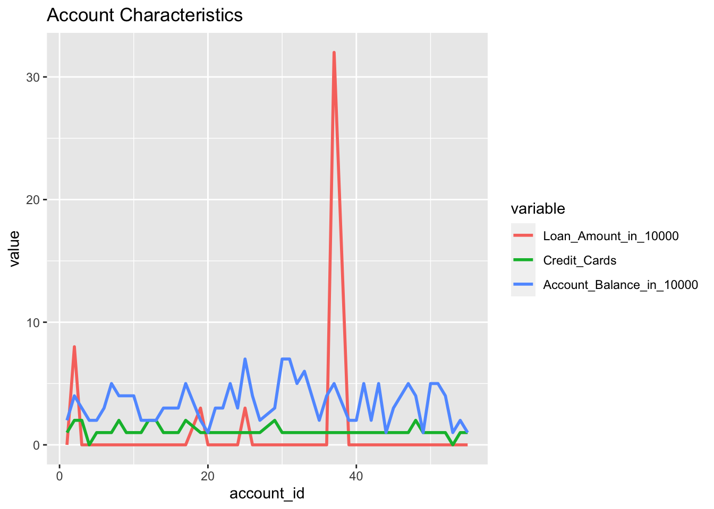
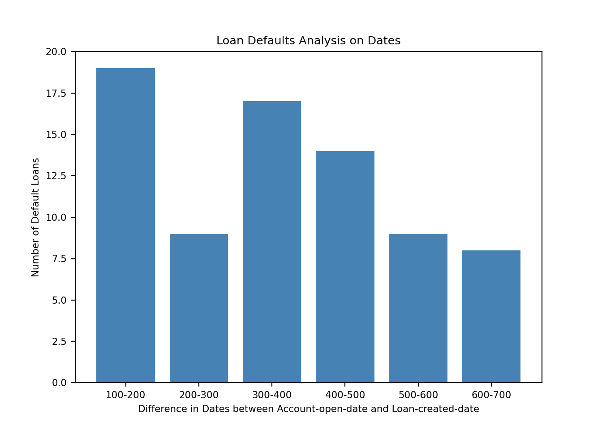
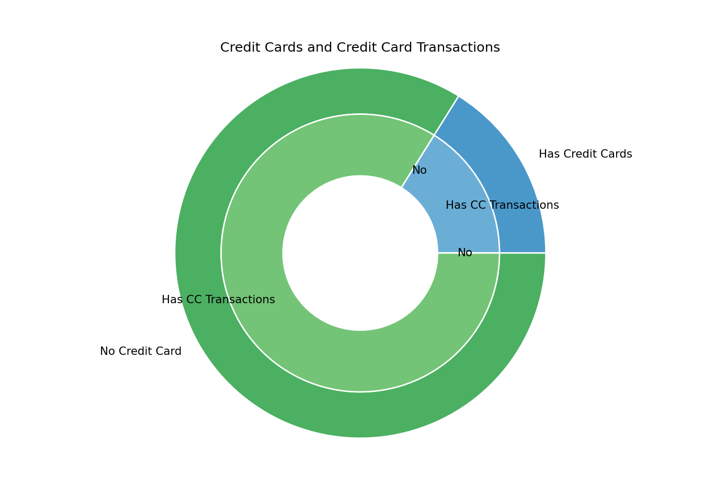

A5 Data Vis

## sys:1: DtypeWarning: Columns (6) have mixed types.Specify dtype option on import or set low_memory=False.## /Users/shrewdli/Library/r-miniconda/envs/r-reticulate/bin/python:1: SettingWithCopyWarning:
## A value is trying to be set on a copy of a slice from a DataFrame.
## Try using .loc[row_indexer,col_indexer] = value instead
##
## See the caveats in the documentation: https://pandas.pydata.org/pandas-docs/stable/user_guide/indexing.html#returning-a-view-versus-a-copy## 45 % of all the accounts have a small loan (<= 100,000)## 51 % of all the accounts have a medium loan (between 100,000 and 300,000)## 4 % of all the accounts have a large loan (> 300,000)## The average balance of accounts with loan <= 100,000 is 47068## The average balance of accounts with loan between 100,000 and 300,000 is 55642## The average balance of accounts with loan > 300,000 is 45382## (-0.05500000000000001, 0.05500000000000001, -0.05500000000000001, 0.05500000000000001)## [None, None, None, None, None, None]## [None, None, None, None, None, None, None, None, None, None, None, None]## Text(0.5, 1.0, 'Distribution of Loans')
## /Users/shrewdli/Library/r-miniconda/envs/r-reticulate/bin/python:1: SettingWithCopyWarning:
## A value is trying to be set on a copy of a slice from a DataFrame.
## Try using .loc[row_indexer,col_indexer] = value instead
##
## See the caveats in the documentation: https://pandas.pydata.org/pandas-docs/stable/user_guide/indexing.html#returning-a-view-versus-a-copy## <BarContainer object of 6 artists>## ([<matplotlib.axis.XTick object at 0x7ff08d381e48>, <matplotlib.axis.XTick object at 0x7ff08d381a20>, <matplotlib.axis.XTick object at 0x7ff08d381668>, <matplotlib.axis.XTick object at 0x7ff08f84f630>, <matplotlib.axis.XTick object at 0x7ff08f84fac8>, <matplotlib.axis.XTick object at 0x7ff08f84ff60>], [Text(0, 0, '100-200'), Text(1, 0, '200-300'), Text(2, 0, '300-400'), Text(3, 0, '400-500'), Text(4, 0, '500-600'), Text(5, 0, '600-700')])## (0.0, 20.0)## Text(0.5, 0, 'Difference in Dates between Account-open-date and Loan-created-date')## Text(0, 0.5, 'Number of Default Loans')## Text(0.5, 1.0, 'Loan Defaults Analysis on Dates') From the plot, it seems that loan default happen the most when the difference in date between account creation and loan creation is between 100 and 200 days, and the second highest range is between 300 and 400 days. The probability of loan default decreases as the difference in creation dates increase. The overall trend is that accounts that have a loan created within 200 days is subject to higher default rate, and accounts that have a loan created after 600 days is subject to the lowest default rate.
## sys:1: DtypeWarning: Columns (6) have mixed types.Specify dtype option on import or set low_memory=False.## account_id id date type ... bank account method category
## 4260 8261 675 675 675 ... 344 383 539 349
##
## [1 rows x 10 columns]## /Users/shrewdli/Library/r-miniconda/envs/r-reticulate/bin/python:1: SettingWithCopyWarning:
## A value is trying to be set on a copy of a slice from a DataFrame.
## Try using .loc[row_indexer,col_indexer] = value instead
##
## See the caveats in the documentation: https://pandas.pydata.org/pandas-docs/stable/user_guide/indexing.html#returning-a-view-versus-a-copy## [<matplotlib.lines.Line2D object at 0x7ff08f9188d0>]## [<matplotlib.lines.Line2D object at 0x7ff08d3b8e48>]## [<matplotlib.lines.Line2D object at 0x7ff08d3cb198>]## [<matplotlib.lines.Line2D object at 0x7ff08d3cb470>]## [<matplotlib.lines.Line2D object at 0x7ff08d3cb748>]## [<matplotlib.lines.Line2D object at 0x7ff08d3cba20>]## [<matplotlib.lines.Line2D object at 0x7ff08d3cbcf8>]## [<matplotlib.lines.Line2D object at 0x7ff08d3cbfd0>]## [<matplotlib.lines.Line2D object at 0x7ff08d6b32e8>]## <matplotlib.legend.Legend object at 0x7ff08d6b3828>## Text(0.5, 0, 'Year')## Text(0.5, 1.0, 'Behaviors of Account with the Highest Number of Transaction')Account with ID 8261 has the most number of transactions. From the time series line plot, we observe that more amount of transactions are conducted via credit cards prior to 1994 and after 1997. Between 1994 and 1997, more amount of transactions are conducted via debit cards. In addition, most amount of transactions are for bank transfer.
## sys:1: DtypeWarning: Columns (6) have mixed types.Specify dtype option on import or set low_memory=False.## (-0.05500000000000001, 0.05500000000000001, -0.05500000000000001, 0.05500000000000001)## [None, None, None, None]## [None, None, None, None, None, None, None, None]## Text(0.5, 1.0, 'Credit Cards and Credit Card Transactions') By observing the pie chart of the association between credit cards and credit card transactions of accounts, something worth noting is that even accounts with no credit cards still have credit card transactions associated with the account. This observation is counter-intuitive to my guess that accounts with no credit cards do not have any credit card transactions.